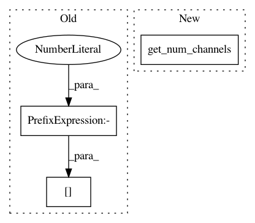

b4479e2c2f165a3468b9c8839710794008b21a58,dataset/models/tf/linknet.py,LinkNet,decoder_block,#Any#Any#Any#Any#,109
Before Change
upsample_args = cls.pop("upsample", kwargs)
num_filters = inputs.get_shape()[-1].value // 4
with tf.variable_scope(name):
x = conv_block(inputs, "cna", num_filters, kernel_size=1, name="conv_pre", **kwargs)
x = cls.upsample(x, filters=num_filters, name="upsample", **upsample_args)
After Change
upsample_args = cls.pop("upsample", kwargs)
num_filters = cls.get_num_channels(inputs, kwargs.get("data_format")) // 4
with tf.variable_scope(name):
x = conv_block(inputs, "cna", num_filters, kernel_size=1, name="conv_pre", **kwargs)
x = cls.upsample(x, filters=num_filters, name="upsample", **upsample_args)
In pattern: SUPERPATTERN
Frequency: 4
Non-data size: 3
Instances
Project Name: analysiscenter/batchflow
Commit Name: b4479e2c2f165a3468b9c8839710794008b21a58
Time: 2017-12-12
Author: a.kozhevin@analysiscenter.ru
File Name: dataset/models/tf/linknet.py
Class Name: LinkNet
Method Name: decoder_block
Project Name: analysiscenter/batchflow
Commit Name: da6c8b0423238e90185e776b5f217ee02c98f6ba
Time: 2017-12-08
Author: a.kozhevin@analysiscenter.ru
File Name: dataset/models/tf/linknet.py
Class Name: LinkNet
Method Name: decoder_block
Project Name: analysiscenter/batchflow
Commit Name: c2041cf9be09dfbc5f975ab21fa1d318ad0f2c24
Time: 2019-12-25
Author: nikita_007_94@mail.ru
File Name: batchflow/models/torch/modules.py
Class Name: FPA
Method Name: __init__
Project Name: analysiscenter/batchflow
Commit Name: 4bad069139070d6f70836bcb64976e4ea00ea7a0
Time: 2020-01-22
Author: nikita_007_94@mail.ru
File Name: batchflow/models/torch/blocks.py
Class Name: ResBlock
Method Name: __init__